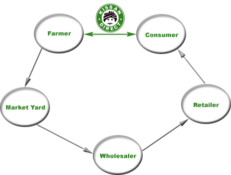

It is a modest effort but a revolutionary one to connect the consumers directly to the farmers and their produce.
This modell would dissolve permanently some of the inveterate problems facing a consumer: access to quality produce; and facing a farmer: a remunerative price. Also a myriad bunch of benefits would accrue both to the farmer and the consumer.
If we assume x be price of kilogram of mango that is determined at a market yard in an auction, the flow chart helps in visualizing the actual amount the farmer gets. An average of Rs. 3 /Kg is spent towards costs for harvesting and transporting his produce to the market yard.
An additional 10% of x (the price a wholesaler bids in open auction in market yard) is paid by the farmer to the agent who facilitates the transaction between the farmer and wholesaler at the market yard.
The net price that a farmer gets for a kilogram of mango is: x - 3 - x*10/100 = 0.9x - 3. From my experience in the last 5 years, x varies anywhere between Rs. 7 and Rs. 12 depending on the amount of fruit coming to market yard during the peak season (end of April to early June). This means a farmer makes anywhere between Rs. 4 and Rs. 7 a kilo.
From the above diagram one can clearly see it is just one step to move the produce from the field to the table of a consumer. KissanDirect is one way of making this possible.
We can use technology that is available to remove redundancies and apprehensions. The belief here is that if we can build the trust and tear away the veil of uncertainty between the actual people: the giver and the taker, a whole slew of benefits will accrue to both the players.
The idea to link the consumer and the producer came after listening to the experiences of one of my father's friends who lives in Hyderabad. My father sent them a basket of mangoes from our farm in one of the previous years. The following year, we could not send them mangoes for various reasons. What she told us when we met her some time later is that all her efforts to find mangoes in the market that could match the taste of the mangoes from our farm had turned futile. When we sent her again mangoes from our farm, we brought back the smile and satisfaction for that summer. So, I thought would it not be possible to provide the produce from the farm with a quality that eludes the most in retail outlets across the city.
Agriculture is indeed not much different from child rearing. The responsibility and the associated joy seem to be present in both the activities. But in the prevailing conditions, does the farmer have the luxury to look at that way? The farmer has to wage a battle against high input costs, low prices for his produce, vagaries of the climate, to earn a decent livelihood. Institutional support - banks, market places, co-operative societies, insurance policies - is either non existent or is being dismantled if any by the neoliberal policies being pursued by the government. This leaves the farmer in a desperate situation forbidding any joy in his profession and in the process forcing him to adopt various unsustainable methods in the hope of staying afloat the wrecked ship - the agriculture.
The only choice left before the farmer to offset the high input costs and low output prices is to raise the output. The farmer without realizing enters into a vicious cycle: to increase the output, he applies higher doses of fertilizer, pesticides thereby increasing the input costs and in the process agriculture is re-laid on the lines of factory production. The practices would increase production in the short term but have deleterious affects in the long term. Unlike in assembly line production, dependence of harvest on multiple factors - pests, rainfall, climate (modern agricultural practices are inadequate to ensure flowering and the ratio of flowers that would turn into fruit), etc - leaves a farmer moored to a mountain of debt. This situation has forced an exodus from farming leaving only either the brave or for whom agriculture is the only option.
Our model here would alleviate the condition of the farmer by raising the output price. This would increase the number of factors to two - size of produce and price of produce - that a farmer can depend on for the viability of his profession and provide breathing space to rethink on the present practices of farming.
A new future hinges on the success of this initial offering of KissanDirect. Transparency should be the pre-requisite for any business and a consumers' right. With the proliferation of internet devices (3G/4G), farmers and consumers can connect directly and KissanDirect can provide the platform for it.
What KissanDirect can do for a consumer
a) ensure the quality of produce as promised by the farmer
b) provide mechanism for delivery to the consumer
c) provide a barcode to the produce that a consumer buys which can hold information
about:
i) quality of the soil,
ii) nutritional level of the produce,
iii) the day of harvest,
iv) number of miles the produce traveled and other relevant information that a consumer deems necessary for him to make a qualified decision.
These should enable a consumer to have all the information about each morsel of food that she eats.
On the production side KissanDirect can ensure the farmer is the sole beneficiary by eliminating all the middlemen. Small scale solar powered processing industries can be set in the villages to process the produce like milling rice or pulses, extracting oil form seeds. These will not only provide employment in the villages but could transform the villages into cash rich self sustaining units that can finance building modern urban facilities like sewerage lines, water lines, proper schools, hospitals etc.
a) The mangoes would be harvested only after they reach the ripening stage on the tree ensuring a sweet taste that eludes many that are procured from retail outlets in the city.
b) No chemicals (carbide) would be used to induce ripening not jeopardizing the health of consumer.
c) To be able to connect directly to the farmer and influence the way farming is carried out. However radical the idea is, this could have profound implications in mitigating many of the bad practices in farming leading to healthy soil, nutritious and tasty produce and healthy consumers. On the whole a road towards sustainable farming could be paved.
An order can be placed for one or more baskets(units). The mango variety is Banganpalli. Each box will weigh 10 Kg (the number of mangoes will be between 30 and 40). The produce this year is down by 50-60% than last year therefore the price of mango is higher. The price of each basket will be Rs. 250 (10Kg * Rs. 25/Kg).
Once the orders reach 100 baskets, an e-mail will be dispatched that will tell the place for pickup. Money can be paid upon the receipt of your basket of mangoes. This time the order will not be delivered to your place since that would take a lot of logistical support, instead a place convenient (mostly nearer to the workplace) for pickup and the day of pickup will be mentioned.
Go ahead and request your baskets of mangoes.